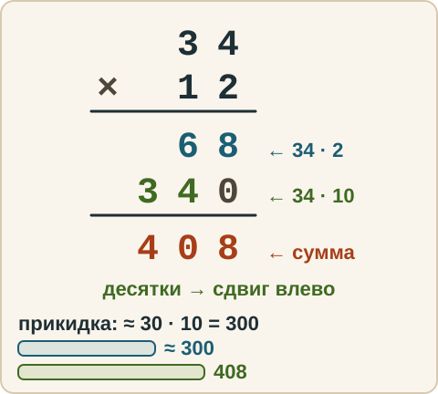
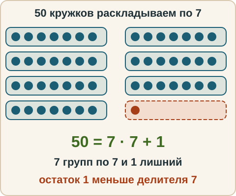
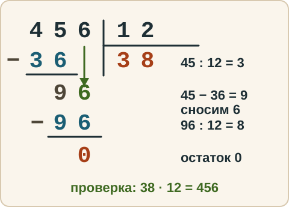
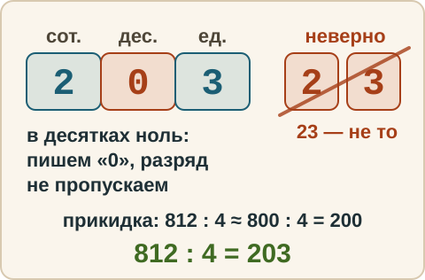

Математика: база · занятие 2Умножение и деление столбиком, остаток
Цель: ты умножаешь двузначное на двузначное и делишь трёхзначное на двузначное на бумаге, называешь остаток. Ответы и подсказки спрятаны: сначала реши сам, потом нажми кнопку.
Вспомнить
- 8 · 7
- 54 : 6
- 4 + 5 · 2
- (4 + 5) · 2
- 60 − 24 : 4
- 12 · 10
Беглость
Сначала повтори три примера, которые вчера шли дольше всех (они записаны в твоём журнале). Потом — эти:
- 7 · 6
- 9 · 8
- 6 · 6
- 56 : 7
- 81 : 9
- 42 : 6
- 9 · 7
- 8 · 6
Затем — умножение на 10 и 100. Ответь и объясни словами, что происходит с нулями.
- 23 · 10
- 23 · 100
- 450 : 10
Правило
Умножение столбиком. Умножаем на каждую цифру второго множителя отдельно, начиная с единиц, и сдвигаем строку на одну позицию влево, потому что вторая цифра — это десятки.
Деление столбиком с остатком. Пример: 50 : 7. Сколько раз 7 помещается в 50? 7 · 7 = 49, 7 · 8 = 56 — много. Значит 7 раз, и остаётся 50 − 49 = 1. Записывают: 50 : 7 = 7 (ост. 1). Проверка: 7 · 7 + 1 = 50.
Остаток — то, что не поделилось. Остаток всегда меньше делителя: если получился остаток 7 при делении на 7, значит, можно было взять ещё один раз.
Разобранный пример
34 · 12
34 × 12 ---- 68 ← 34 · 2 (единицы) 34 ← 34 · 1 (десятки), сдвиг на одну позицию влево ---- 408
Ответ: 408.
Проверка прикидкой: 34 · 12 — это примерно 30 · 10 = 300 и ещё немного. 408 похоже на правду, 48 или 4080 — нет.

50 : 7 = 7 (ост. 1). Проверка: 7 · 7 + 1 = 50.

С подсказкой
Решай сам. Подсказки открывай по одной, только если застрял.
- 456 : 12

Сам
- 27 · 14
- 812 : 4
- 95 : 8 — с остатком
Ловушка
Ловушка. В б) после того как 8 : 4 = 2, цифра 1 на 4 не делится — в частном пишем 0, а не пропускаем разряд. Ответ 203, не 23. Проверка прикидкой: 812 : 4 ≈ 800 : 4 = 200.

Смесь
- 19 − 3 · 4
- 45 · 11
- 8 · 9
- 91 : 7
- (20 − 8) : 4
- 23 · 10 + 5
- 63 : 9 · 3
- 74 : 9 — с остатком
- 100 − 100 : 4
Журнал
Запиши 1–3 строки: «что перепутал → как проверить».
- …